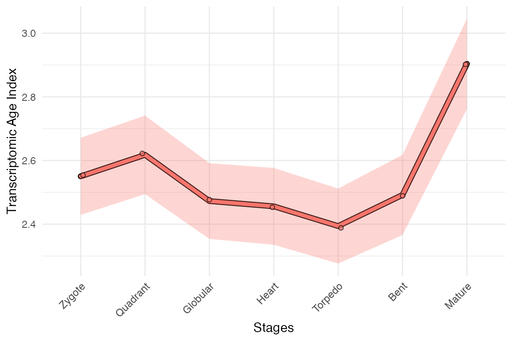
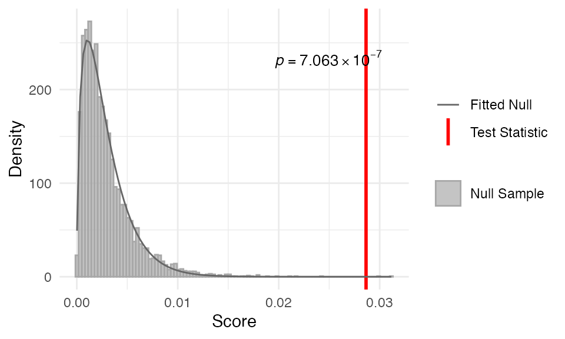
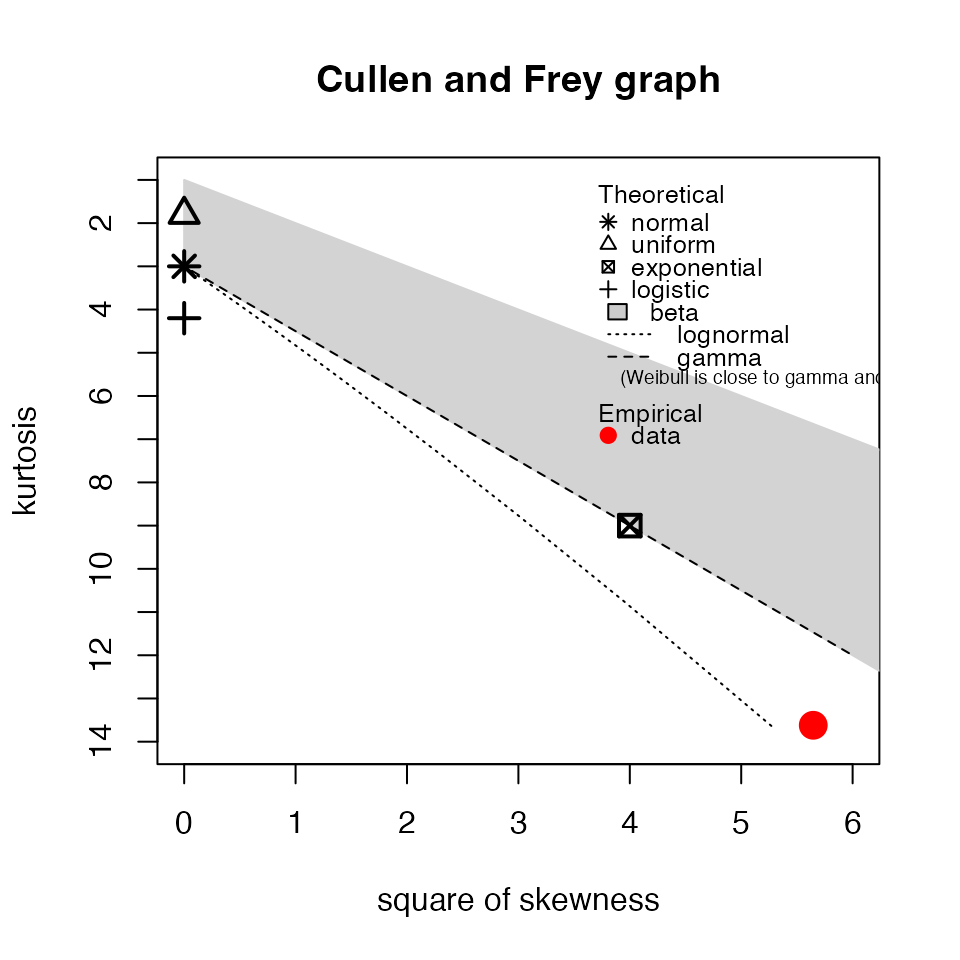
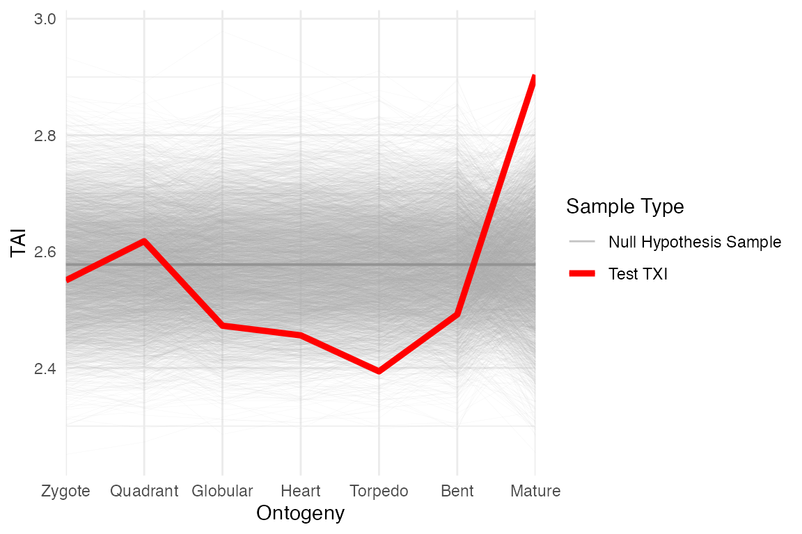
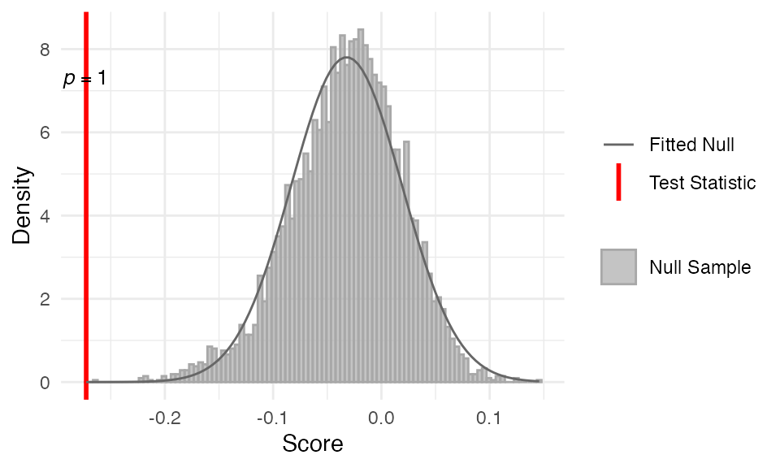
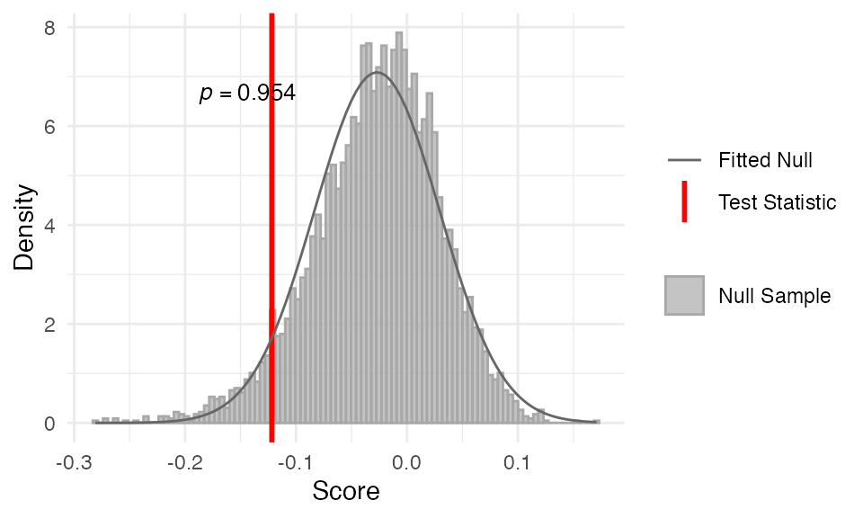
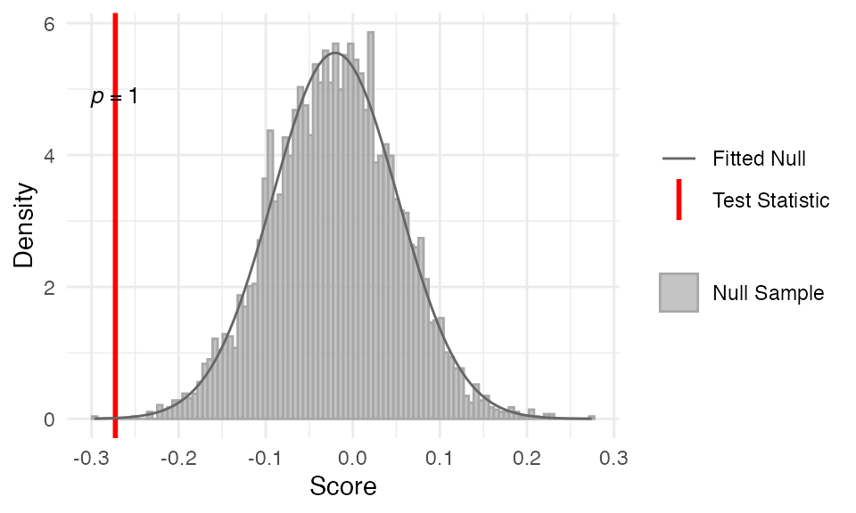
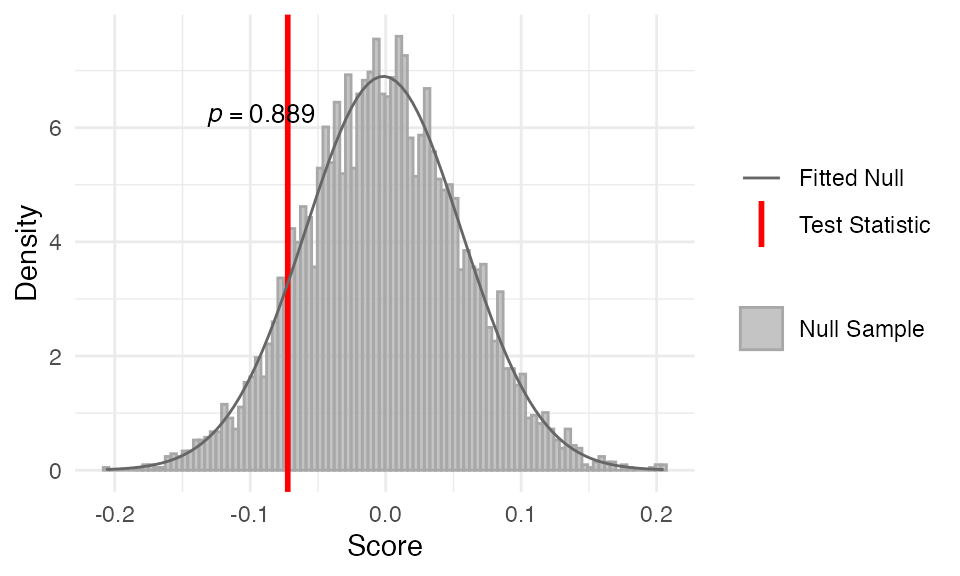

Let’s say you have your transcriptome age index (TAI) pattern, e.g.
data("example_phyex_set_old")
myTAI::plot_signature(example_phyex_set_old, show_p_val = FALSE)
But how can you test if this pattern is significant?
With myTAIv2, we have introduced a suite of
permutation-based statistical testing framework to test the significance
of your TAI (as well as TDI, TSI and analogous) profiles.
In this section, we will go through:
(1) myTAI::stat_flatline_test() which evaluates whether the
observed TAI profile is significantly different from a flatline (i.e. no
evolutionary trend).
(2) myTAI::stat_reductive_hourglass_test() which evaluates
whether the observed TAI profile is significantly different from an
hourglass pattern (i.e. consistent with the molecular hourglass
hypothesis), as well as the reverse
myTAI::stat_reverse_hourglass_test() and tests of potential
other evolutionary patterns such as
myTAI::stat_early_conservation_test() and
myTAI::stat_late_conservation_test().
(3) myTAI::stat_pairwise_test() which evaluates whether the
TAI profiles of two groups of samples are significantly different from
each other.
Unlike stat_flatline_test(), the other tests
(stat_reductive_hourglass_test(),
stat_reverse_hourglass_test(),
stat_early_conservation_test(),
stat_late_conservation_test(), and
stat_pairwise_test()) require an a priori grouping
of developmental stage or experimental conditions.
The flat line test tests the variance of the TAI (or equivalent) profile against a null distribution.
myTAI::stat_flatline_test(example_phyex_set_old, plot_result = TRUE)## Computing: [========================================] 100% (done)
##
## Statistical Test Result
## =======================
## Method: Flat Line Test
## Test statistic: 0.008821277
## P-value: 1.267188e-05
## Alternative hypothesis: greater
## Data: Embryogenesis 2011We can see a histogram of the null distribution
(along with the fitted null distribution) and the
observed variance. In text, we can see the summary test
statistics of the flat line test. The plots are created by default but
you can also turn plot_result = FALSE to not plot the
results of the test.
In this example, we can see that the pattern significantly deviates from a flat line (i.e. no variance).
The myTAI::stat_flatline_test() is a good first step to
evaluating the evolutionary signals in your transcriptomic data.
To further inspect the permutation test, we can use the Cullen and
Frey plot (skewness vs. kurtosis;
myTAI::plot_cullen_frey()) to help identify appropriate
distribution families for the null sample data.
res_flt <- myTAI::stat_flatline_test(example_phyex_set_old, plot_result = FALSE)
myTAI::plot_cullen_frey(res_flt)
myTAI::plot_cullen_frey(res_flt)
## summary statistics
## ------
## min: 2.43088e-05 max: 0.00955419
## median: 0.0008731727
## mean: 0.001194889
## estimated sd: 0.001054459
## estimated skewness: 1.965726
## estimated kurtosis: 8.396439We can see that the null sample lies within the gamma distribution
family, which is a good sign because the
myTAI::stat_flatline_test() assumes that the null sample is
gamma-distributed.
The myTAI::plot_cullen_frey() function is also useful
for the other tests as well
(e.g. stat_reductive_hourglass_test(),
stat_reverse_hourglass_test(),
stat_early_conservation_test(),
stat_late_conservation_test(), and
stat_pairwise_test()).
Furthermore, using the results of the flat line test (saved here as
res_flt), we can visualise TAI pattern of each of the
permutations using myTAI::plot_null_txi_sample(), i.e.
myTAI::plot_null_txi_sample(res_flt)
myTAI::plot_null_txi_sample(res_flt)
The null variance distribution is produced from the grey lines, while the red line is the observed TAI profile. The distance between the red and grey lines indicate that older genes are generally higher expressed than younger genes (as they contribute more to the TAI), and the observed TAI profile is more variable than the null distribution.
The following tests (stat_reductive_hourglass_test(),
stat_reverse_hourglass_test(),
stat_early_conservation_test() and
stat_late_conservation_test()) evaluates changes in
evolutionary signal across developmental stages. Rather than testing the
variance of the TAI profile against a null
distribution, these tests evaluate whether the observed TAI profile is
significantly different from the null to support an hourglass pattern
(i.e. consistent with the molecular hourglass hypothesis), a reverse
hourglass pattern, or an early/late conservation pattern.
We also need to specify a priori grouping of developmental
stages or experimental conditions. For example, we can group the
developmental stages into: early (stages 1-3), mid (stages 4-5) and late
(stages 6-7). This is specified via the parameter
modules.
The reductive hourglass test evaluates whether the observed TAI
profile significantly deviates from the null towards an
hourglass pattern, i.e. the TAI values are lower in the
mid-stage compared to the early and late stages. This can be achieved
with the function
myTAI::stat_reductive_hourglass_test().
modules <- list(early = 1:3, mid = 4:5, late = 6:7)
myTAI::stat_reductive_hourglass_test(
example_phyex_set_old, plot_result = TRUE,
modules = modules)##
## Statistical Test Result
## =======================
## Method: Reductive Hourglass Test
## Test statistic: 0.09805552
## P-value: 5.887196e-05
## Alternative hypothesis: greater
## Data: Embryogenesis 2011In this example, we can see that the TAI pattern is consistent with the molecular hourglass model, as the observed TAI profile is significantly different from the null distribution.
We can also check the Cullen and Frey plot (though I have put this
under a details tag to not clutter the output) to see if the null sample
is normally-distributed, which the assumption for the
myTAI::stat_reductive_hourglass_test().
res_flt <- myTAI::stat_reductive_hourglass_test(
example_phyex_set_old, plot_result = FALSE,
modules = modules)
myTAI::plot_cullen_frey(res_flt)## summary statistics
## ------
## min: -0.1580335 max: 0.07679264
## median: -0.01828207
## mean: -0.02005994
## estimated sd: 0.03067622
## estimated skewness: -0.3852806
## estimated kurtosis: 3.431289Indeed it is!
Analogously, we can also test for whether the observed patterns are
consistent with an inverse or reverse hourglass pattern,
i.e. the TAI (as well as TDI, TSI and analogous) values tend to be
higher in the mid-stage. This can be achieved with the function
myTAI::stat_reverse_hourglass_test().
modules <- list(early = 1:3, mid = 4:5, late = 6:7)
myTAI::stat_reverse_hourglass_test(
example_phyex_set_old, plot_result = TRUE,
modules = modules)
##
## Statistical Test Result
## =======================
## Method: Reverse Hourglass Test
## Test statistic: -0.1170993
## P-value: 0.9989269
## Alternative hypothesis: greater
## Data: Embryogenesis 2011As we can see from the p-values of the one-tailed test, the TAI
profile does not support the reverse hourglass pattern, i.e. the TAI
values are not higher in the mid-stage. This is not surprisingly given
the results of the
myTAI::stat_reductive_hourglass_test().
Another potential pattern of so-called “ontogeny-phylogeny”
correlation is early conservation, which has a long history
in evolutionary developmental biology. This pattern suggests that early
developmental stages are more conserved across species, while later
stages show more variability.
To test for the early conservation pattern, we can use the function
myTAI::stat_early_conservation_test(). This test evaluates
whether the TAI profile is significantly lower in the early stages.
modules <- list(early = 1:3, mid = 4:5, late = 6:7)
myTAI::stat_early_conservation_test(
example_phyex_set_old, plot_result = TRUE,
modules = modules)
##
## Statistical Test Result
## =======================
## Method: Early Conservation Test
## Test statistic: -0.09805552
## P-value: 0.9846879
## Alternative hypothesis: greater
## Data: Embryogenesis 2011Again, the TAI profile does not support the early conservation pattern, as the p-value is not significant. TAI values are not significantly lower in the early stages compared to the mid and late stages.
Another potential pattern is late conservation, which
suggests that late developmental stages are more conserved across
species compared to early stages. To test for the late conservation
pattern, we can use the function
myTAI::stat_late_conservation_test(), i.e.
modules <- list(early = 1:3, mid = 4:5, late = 6:7)
myTAI::stat_late_conservation_test(
example_phyex_set_old, plot_result = TRUE,
modules = modules)
##
## Statistical Test Result
## =======================
## Method: Late Conservation Test
## Test statistic: -0.1170993
## P-value: 0.9890815
## Alternative hypothesis: greater
## Data: Embryogenesis 2011As expected again, we do not see support for the late conservation pattern, as the TAI values are not significantly lower in the late stages compared to the early and mid stages.
Finally, we can also test whether the TAI profiles of two groups of
samples are significantly different from each other. This can be
achieved with the function myTAI::stat_pairwise_test().
For example, let’s say we have an experiment where we disrupt an organisms’ development at a given stage using a certain perturbation (e.g. drug treatment). We can compare the TAI profiles of the control and treatment groups to see if the perturbation has an effect on the TAI profile. This could be interesting if the perturbed pathway is thought to recruit orphan genes, i.e. genes that are not conserved across species. An example can be found here.
With myTAIv2, we can facilitate such test. Since we do
not have the data, we will use the example data set
example_phyex_set_old and create two groups of samples:
control and treatment. We can then compare the
TAI profiles of these two groups using the
myTAI::stat_pairwise_test() function.
modules <- list(contrast1 = 1:4, contrast2 = 5:7)
myTAI::stat_pairwise_test(
example_phyex_set_old, plot_result = TRUE,
modules = modules,
alternative = "greater")
##
## Statistical Test Result
## =======================
## Method: Pairwise Test
## Test statistic: 0.0116196
## P-value: 0.3816285
## Alternative hypothesis: greater
## Data: Embryogenesis 2011In this mock example, we can see that the TAI profile of the control
group (contrast1) is not significantly higher than the
treatment group (contrast2), indicating that the
perturbation has no effect on the TAI profile. The p-value is
significant, and the observed TAI profile is significantly different
from the null distribution.
In this section, we have introduced the statistical testing framework
of myTAIv2 to evaluate the significance of TAI patterns.
With this, we can address the question “is my TAI pattern significant?”
in a statistically-informed manner.
We have also introduced the Cullen and Frey plot to help identify appropriate distribution families for the null sample data, as well as the null distribution visualisation to inspect the permutation test results.
It should be noted, however, that the results of the tests may be sensitive to the grouping of developmental stages or experimental conditions. This a priori information should be handled with care.
Moreover, RNA-seq data transformation (e.g. log2 transformation) can
also affect the results of the tests and the overall TAI profile. Given
that we do not have a gold standard transformation, it is recommended to
try different transformations (using myTAI::tf()) and
evaluate the robustness of the results. For more
information, check out this article.